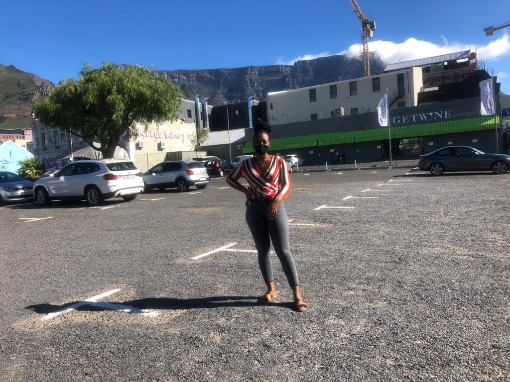
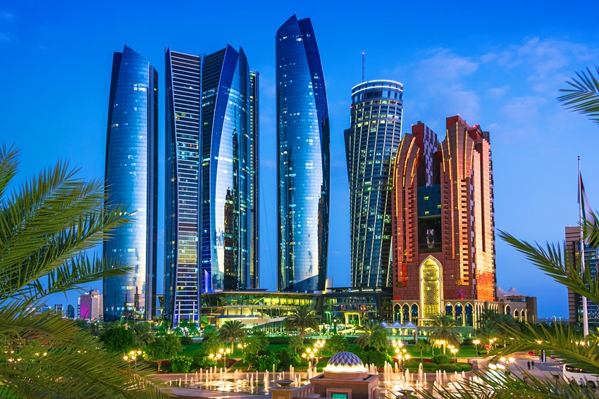

Vhonani Ramurunzi
 I would like to visit Abu Dhabi someday because it is the capital of the United Arab Emirates. Abu Dhabi is a well-ordered, industrious city with a pretty waterside location. The revenues transformed Abu Dhabi into the modern city of today and it is a bustling center of government and business. The Sheikh Zayed Grand Mosque is the major tourist attraction and wows all who visit. It is a much calmer, more traditional city and more family and community led city. There's more focus on a good work-life balance in this city.
The reason why I want to learn spanish language is because it will make my travel experiences more exciting and rewarding. There are 21 countries in the world that have Spanish as an official language. Knowing the language will make my travel experiences in beautiful Spain and Latin America much easier. A good grasp of the Spanish language will be a valuable window into helping me learn about the true culture of the areas I visit, which will truly enhance my travel experience.
| English Phrase | Foreign Language |
|---|---|
| My name is Vhonani | Mi nombre es Vhonani |
| I love to code | Me encanta codificar |
| I am beautiful | Soy hermosa |
District Six Museum is a museum in the former inner-city residential area in Cape Town. The 3 interesting facts about it are the following: District Six has been celebrated in literature by writers such as Richard Rive, Alex la Guma and Bessie Head; in the paintings of Gerard Sekoto, Tyrone Appollis, Kenny Baker and Sandra McGregor; in the photography of Jackie Heyns, Wilfred Paulse and George Hallett. It is known for having provided a creative home for musicians such as Abdullah Ibrahim, Mervyn Africa, Trevor Jones and Robert Sithole. In 1994, the District Six Museum came into being. The museum came into being as a vehicle for advocating social justice, as a space for reflection and contemplation, and as an institution for challenging the distortions and half-truths which propped up the history of Cape Town and South Africa.
The Iziko South African Museum is a South African national museum located in Cape Town. The 3 interesting facts about it are the following : The museum was founded in 1825, the first in the country.IZIKO is an isiXhosa word, meaning ‘hearth’, traditionally and symbolically the social centre of the home; a place associated with warmth, kinship and ancestral spirits.It is one of the premier cultural institutions in South Africa.
The Slave Lodge is a South African social history museum located in Cape Town. The 3 interesting facts about it are the following : The Slave Lodge was built in 1679, making it the second oldest existing colonial structure of the Cape Colony, today known as Cape Town. The Slave Lodge housed the slaves who belonged to the Dutch East India Company (VOC). These slaves worked for the VOC and were never sold.The role that slaves played in developing the Cape Colony was only fully recognised by the museum during the 1990s. The building was renamed the Slave Lodge on Heritage Day, 1998.